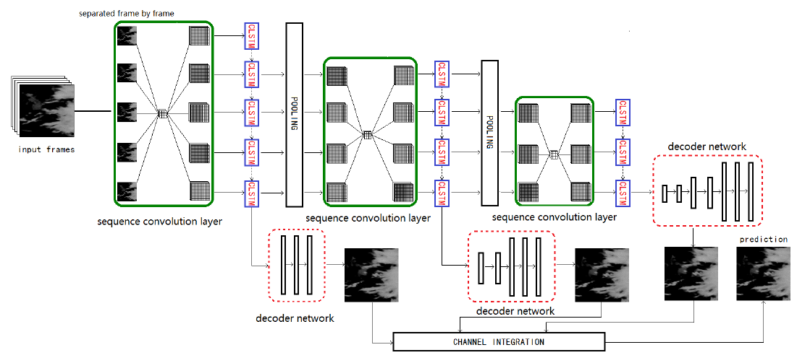
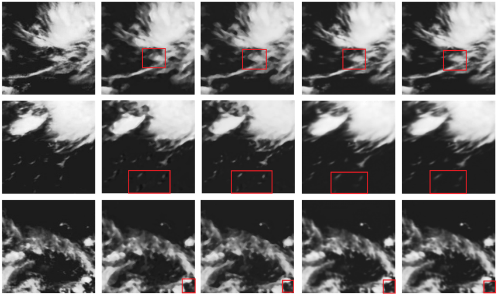

FORECAST-CLSTM: A New Convolutional LSTM Network for Cloudage Nowcasting
Chongqing University of Technology

Abstract
With the highly demand of large-scale and real-time weather service for public, a refinement of short-time cloudage prediction has become an essential part of the weather forecast productions. To provide a weather-service-compliant cloudage nowcasting, in this paper, we propose a novel hierarchical Convolutional Long-ShortTerm Memory network based deep learning model, which we term as FORECAST-CLSTM, with a new Forecaster loss function to predict the future satellite cloud images. The model is designed to fuse multi-scale features in the hierarchical network structure to predict the pixel value and the morphological movement of the cloudage simultaneously. We also collect about 40K infrared satellite nephograms and create a large-scale Satellite Cloudage Map Dataset(SCMD). The proposed FORECAST-CLSTM model is shown to achieve better prediction performance compared with the state-of-the-art ConvLSTM model and the proposed Forecaster Loss Function is also demonstrated to retain the uncertainty of the real atmosphere condition better than conventional loss function.
Examples

Downloads
Citation
@inproceedings{tan2018forecast,
title={FORECAST-CLSTM: a new convolutional LSTM network for cloudage nowcasting},
author={Tan, Chao and Feng, Xin and Long, Jianwu and Geng, Li},
booktitle={2018 IEEE Visual Communications and Image Processing (VCIP)},
pages={1--4},
year={2018},
organization={IEEE}
}